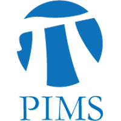

Downtown Vancouver, December 16th, 9AM-5PM, 2019. Register here.


VanML 2019 Conference
Recent advances in machine learning have the potential to revolutionize genomics through deep learning, improved phylogenetic inference and multivariate Bayesian methods. The Vancouver Machine Learning: Genomics (VanML: Genomics) conference is small and focused, and will be held a few days after the famous Neural Information Processing Systems 2019 (NeurIPS) conference and the Machine Learning in Computational Biology (MLCB) workshop and the Women in Machine Learning (WiML) workshop. It will bring together top researchers in a range of biostatistical fields including population genetics, phylogenetics, pathogen studies and proteomics. The speakers and attendees include top researchers from the co-located NeurIPS, MLCB and WiML conferences.
The Vancouver Macine Learning conference is organised by Caroline Colijn (caroline _ colijn ᘒ sfu ᐧ ca) in the Department of Mathematics and Lloyd Elliott (lloyd _ elliott ᘒ sfu ᐧ ca) in the Department of Statistics and Actuarial Science at Simon Fraser University. The conference will be held as a one day conference on December 16th at the Harbour Centre, the first Monday after the NeurIPS 2019 workshops. The venue is the Harbour Centre, which is located in downtown Vancouver and a short walk from the Hyatt Regency hotel and the Vancouver Convention Centre. Bios for our speakers are listed below. Our sponsors are the Office of the Vice-President, Research, and the Department of Statistics and Actuarial Science, at Simon Fraser University, and the Pacific Institute for the Mathematical Sciences (PIMS), and the Canadian Statistical Sciences Institute/Institut canadien des sciences statistiques (CANSSI).
Registration for VanML: Genomics is now open. The registration fee is $50 (CAD). You may register for the VanML: Genomics conference here (follow the link, and then click on the “Sign Up” button). Please let us know if you have any technical problems with the registration process.
Schedule
December 16th, 2019.
Harbour Centre, Segal Centre Rooms. 555 W Hastings St., Vancouver, BC V6B 4N4.
Schedule TBA
Speakers
|
Dr. Jennifer Listgarten is a Professor in the Electrical Engineering and Computer Sciences department and the Center for Computational Biology at Berkeley. She is also a member of the steering committee for the Berkeley AI Research (BAIR) Lab, and a Chan Zuckerberg investigator. Previously, she worked at Microsoft Research, where she developed fast methods for linear mixed models allowing well controlled genome-wide association study on large-scale data sets. Her recent work has been focused on machine learning applications to CRISPR, and proteomics, and her current work is largely focused on the design engineering of proteins and small molecules, as well as nanopore sequencing. She completed her Ph.D. in the machine learning group in the Department of Computer Science at the University of Toronto, located in her home town. |
Dr. Sharon Browning is a Professor in the Department of Biostatistics at the University of Washington. She co-developed the popular BEAGLE software in collaboration with Dr. Brian Browning. Her recent work includes investigations of the contribution of archaic humans to current-day human genomics, and extensions to the BEAGLE software involving identity-by-descent. She has previously served as the Associate Editor for the American Journal of Human Genetics and the journal Statistical Applications in Genetics and Molecular Biology, and she currently serves as an Associate Editor for the journal Genetics. |
|
Dr. David Aanensen is the Director of the Centre for Genomic Pathogen Surveillance at the Wellcome Sanger Institute, and a Senior Group Leader in Genomic Surveillance at the Big Data Institute at the University of Oxford. Dr. David Aanensen is also Director of the NIHR funded Global Health Research Unit on Genomic Surveillance of Antimicrobial Resistance. Dr. David Aanensen's team works with major public health organisations such as the WHO and Public Health England. Applications of his research include mobile data gathering and visualisation platforms. |
Dr. Alexander Bouchard-Côté is a Professor of Statistics at the University of British Columbia. His research focuses are computational statistics and machine learning, with applications to linguistics and biology. His work is influential in phylogenetic inference for population genetics, pedigrees and alignment inference. Dr. Alexander Bouchard-Côté has received the PIMS-UBC Mathematical Sciences Young Faculty Award, the Tweedie Award and the Google Faculty Award. He completed his Ph.D. in computer science at Berkeley. |
|
Dr. Caroline Colijn is a Canada 150 Research Chair in Mathematics for Evolution at the Department of Mathematics, Simon Fraser University and she is affiliated with the Imperial College Mathematics and the Centre for Mathematics of Precision Healthcare. Her research focuses on the interface of mathematics and the epidemiology, and the evolution of pathogens. She is the leader of the MAGPIE group (MAthematics, Genomics and Prediction in Infection and Evolution). Previously, Dr. Caroline Colijn held an EPSRC fellowship at Imperial College London, and her previous work includes the development of metrics for comparing phylogenetic trees (including published R packages). |
Dr. Xuekui Zhang is a Canada Research Chair in Biostatistics and Bioinformatics in the Department of Mathematics and Statistics at the University of Victoria. He is also affiliated with the Centre for Heart and Lung Innovation at University of British Columbia. Prior to joining the University of Victoria, Dr. Xuekui Zhang worked in the pharmaceutical industry (including a position at Eli Lilly & Co). Dr. Xuekui Zhang's research group focuses on statistical genomics, and machine learning applications to genome-wide association studies and clinical trials. His recent projects include novel SNPs discovery methods in GWAS studies, multiple outcome prediction, and software for nucleosome positioning. |
List of Attendees
Simon Fraser University acknowledges the Coast Salish People on whose traditional and unceded territories we are privileged to live, work and play.